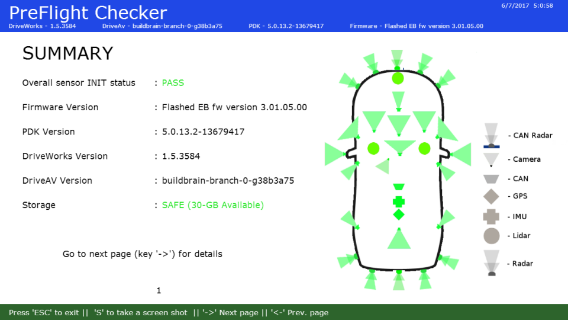

Table of Contents
The Pre-Flight Checker (PFC) tool ensures proper operation of all connected sensors and checks prerequisites required for the car to be safely driven in autonomous mode. It is a shell script that consumes JSON files that define the sensors it should check.
During installation, PFC is initialized for the current configuration.
Prerequisites
PFC runs on these hardware platforms:
- NVIDIA DRIVE™ AGX Platform: Bench setup with all sensors connected.
- NVIDIA DRIVE AGX Platform: In-Car
For the following information, see the NVIDIA DRIVE AV Release Notes:
- Specifications on the supported NVIDIA DRIVE AGX Platform
- Software versions that PFC and NVIDIA DRIVE AV use
PFC must be installed with NVIDIA DRIVE™ AV.
Bench Validation
Below are the prerequisites to ensure correct PFC results during bench mode validation. In bench mode, sensor data usually comes from recordings, but it can also come from sensors.
- Note
- Currently, PFC bench validation supports only data from sensors. It does not support recorded data.
- GPS sensor must have clear sky. If PFC is executed in a garage or closed environment, GPS data-validity may indicate failure.
All camera and Radar sensors must be exposed to a valid environment. Specifically, cameras must:
- Have a valid, unobstructed view. Cameras must not face a static view, such as a wall. Cameras must not be obstructed by barriers, such as trees, cloth, or mud.
- Be exposed to appropriate lights.
Radar sensor must be separated from objects by at least 1-meter; otherwise, Radar data-validity fails.
In-Car Validation
Below are the prerequisite to ensure correct PFC results during in-car validation.
- Prerequisites specified for Bench Validation.
- CAR engine must be ON, the transmission must be in Park, and the steering must be unlocked; otherwise, CAN sanity fails.
Running in Autonomous Driving Mode
- On the platform, navigate to:
/usr/local/driveworks/tools/preFlightChecker/config
Enter:
$ sudo ./pfc_run.sh --rig <rig_file_path> --car agx-rel [--no-gui]
Where
<rig_file_path>is the path of the rig.json file that specifies each sensors to validate, based on the setup configuration.<car_no>identifies the car. For the NVIDIA AGX Platform, set this parameter toagx-rel.
By default:bench.--no-gui(optional) disables the PFC GUI and instead displays the result only on the console.
For example:
$ sudo ./pfc_run.sh --rig hyperion-7-1-release.json --car agx-rel --no-gui
For NVIDIA Hyperion 7.1, the config rig file is available at:
/usr/local/driveworks/tools/preFlightChecker/config/hyperion7-1-release.json
- PFC updates the log output as specified in
hyperion7-1-release.json. It also displays the current sensor status in a sequence of four images:- Summary: The first window shows a summary of sensor status (screen shot follows).
- Detail: Use the RIGHT-ARROW key to navigate to the detail windows, which includes multiple pages. Use the RIGHT- and LEFT-ARROW keys to navigate between pages.
An example of the detailed information follows.


Running in Bench Mode
When you use PFC in bench mode, it performs the same checks as in autonomous mode. However, in bench mode, CAN devices are unavailable. Those devices include brake, throttle, gear & steering. As a result, validation of those devices always fails.
- On the platform, navigate to:
/usr/local/driveworks/tools/preFlightChecker/config
Enter:
$ sudo ./pfc_run.sh --rig <rig_file_path>
Where
<rig_file_path>is the path of the rig.json file that specifies each sensors to validate, based on the setup configuration.
For example:
$ sudo ./pfc_run.sh --rig hyperion7-1-release.json
For NVIDIA Hyperion 7.1, the config rig file is available at:
/usr/local/driveworks/tools/preFlightChecker/config/hyperion7-1-release.json
Running on Hyperion 8 Platform
- On the platform, navigate to:
/usr/local/driveworks/tools/preFlightChecker/config
- Enter:
python3 hyp8_pfc_run.py --rig <rig_file_path>
Where<rig_file_path>is the path of the rig.json file that specifies each sensors to validate, based on the setup configuration.
Hyperion8 rigs for various configurations are located in the recording directory:
/usr/local/driveworks/tools/capture/configs
Generating a Data Log
By default, PFC generates a log.
- Note
- If debug logs are enabled, there is a possibility of CAN Sanity and IMU/GPS data-validity failure. This failure is from the logging latency.
The following is an example of the log output.
The log provides the following information:
- SENSOR NAME: Sensor name and type, as specified in rig file. For example, camera, Lidar, or Radar. When available, this field also shows the sensor position.
- INIT: Status of sensor initialization.
- DATA-RATE (mega-pixels/second): Rate at which the sensor feeds the data to PFC. Applies to cameras only.
- FREQUENCY (Hertz): Number of frames available per second.
DATA-VALIDATE: Status of the data validity check performed on sensors. Supported values are:
- VALID: Sensor is providing valid data.
- NOT_IMPL: Support for the specified sensor is not yet implemented.
- -NA-: Indicates the attribute, such as DATA-RATE, does not apply to the sensor.
For information on how PFC determines data validity, see Pre-Flight Checker Features.
Interpreting the Log
This section explains how to interpret information in the log.
Sensor Frequency Is Zero
The FREQUENCY field for a sensor show a value of zero when data is not available. This can happen even though the sensor is connected properly. These symptoms can be due to:
- For GPS, the signal strength is weak.
- For Lidar or Radar, the sensor is blocked.
Sensor Has INVALID Status
The DATA-VALIDATE field for a camera shows INVALID when there are issues with the sensor position.
To fix in bench mode
- Re-align camera sensor
To fix in autonomous vehicle mode
- Move the car to a different location.